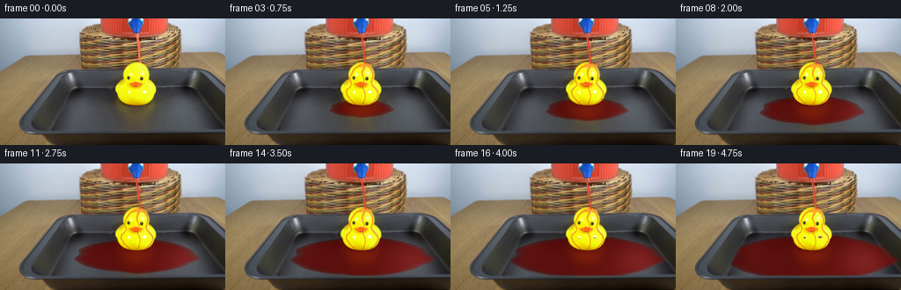
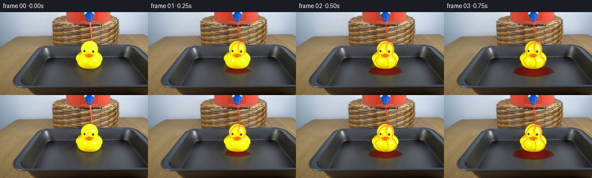
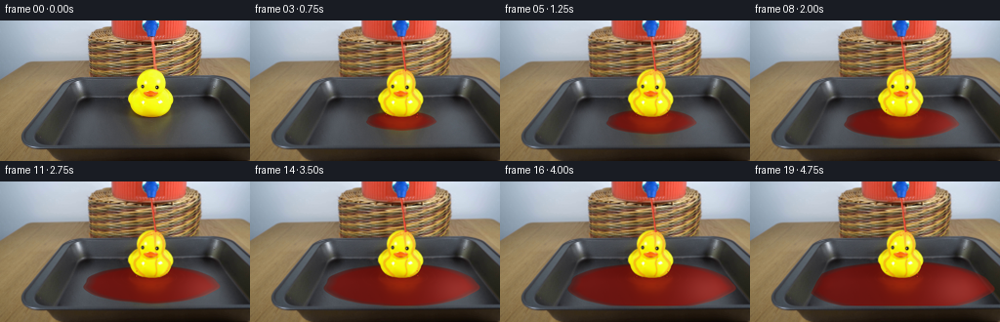
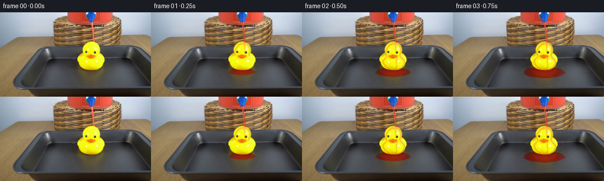
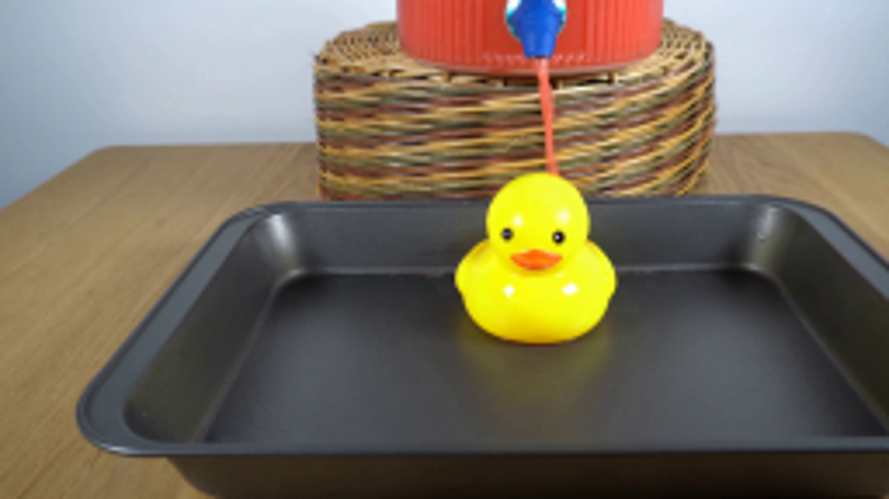
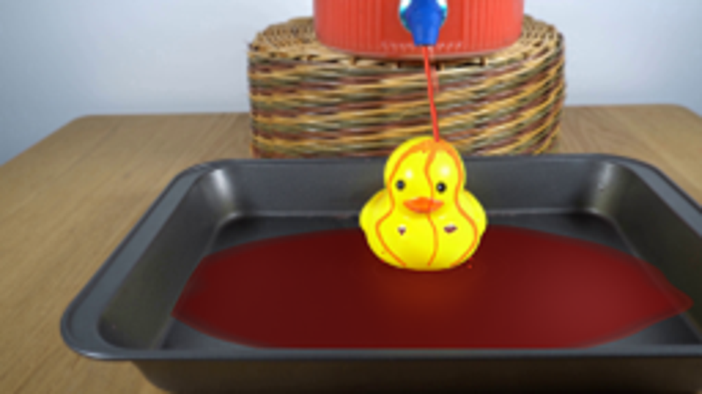

CODING AGENTS AS PIXEL WORLD MODELS
traex/GPT-6.1-Sol · 0086
点击播放 · 原生 RGB 像素
逐轮保存的候选
回放视频、检查图与代码变化。
每份候选均可单独播放。实际图片检查记录在下方工具轨迹中。
候选 01播放与检查图
点击播放 · 原生 RGB 像素


展开代码变化
--- 上一保存版本
+++ 本次保存版本
@@ -0,0 +1,165 @@
+from pathlib import Path
+import numpy as np
+from PIL import Image, ImageDraw
+from scipy.ndimage import gaussian_filter
+from scipy.interpolate import CubicSpline
+import artifact_io
+
+ROOT=Path(__file__).resolve().parent
+S=4
+W,H=256*S,144*S
+Y,X=np.mgrid[0:H,0:W].astype(float)/S
+original=np.array(Image.open(ROOT/'first_frame.png').convert('RGB'))
+base=np.array(Image.fromarray(original).resize((W,H),Image.Resampling.BICUBIC)).astype(float)
+# Removing only the original slender jet, to animate the same stream.
+clean=base.copy()
+for j in range(18*S,51*S):
+ y=j/S
+ xc=154.7+.128*(y-18)
+ left=int((xc-2.7)*S); right=int((xc+2.7)*S)
+ a=base[j,left-1].copy(); b=base[j,right+1].copy()
+ for i in range(left,right+1):
+ f=(i-left+1)/(right-left+2)
+ clean[j,i]=(1-f)*a+f*b
+# Tray's flat inner surface: the raised walls are not flooded.
+floor_img=Image.new('L',(W,H))
+d=ImageDraw.Draw(floor_img)
+d.polygon([(x*S,y*S) for x,y in [(88,80),(218,80),(231,84),(244,98),(255,110),(256,127.4),(60,127.4),(60,119),(68,103),(78,88)]],fill=255)
+floor=np.array(floor_img).astype(float)/255
+# Extract the rubber surface from the photograph; no motion or change of shape.
+duck=((base[:,:,0]>137)&(base[:,:,1]>105)&(base[:,:,2]<120)&(X>131)&(X<180)&(Y>49)&(Y<100)).astype(float)
+duck=gaussian_filter(duck,.55)
+floor*=1-duck
+
+def composite(img,col,a):
+ if np.ndim(a)==2:a=a[:,:,None]
+ return img*(1-a)+np.asarray(col)*a
+
+def curved_trace(points,widths,t,phase=0):
+ p=np.asarray(points,float); lengths=np.r_[0,np.cumsum(np.linalg.norm(np.diff(p,axis=0),axis=1))]
+ u=np.linspace(0,lengths[-1],max(120,int(lengths[-1]*12)))
+ xx=CubicSpline(lengths,p[:,0])(u); yy=CubicSpline(lengths,p[:,1])(u)
+ ww=np.interp(u,lengths,np.asarray(widths))
+ # Small flowing changes, not a rigid or swinging rubber object.
+ xx+=.13*np.sin(u*.72-t*8+phase)
+ trace=np.zeros((H,W),float)
+ core=np.zeros_like(trace)
+ for px,py,pw,v in zip(xx,yy,ww,u):
+ pw*=.91+.09*np.sin(v*1.35-t*10+phase)
+ x0=max(0,int((px-pw-1)*S));x1=min(W,int((px+pw+1)*S)+1)
+ y0=max(0,int((py-pw-1)*S));y1=min(H,int((py+pw+1)*S)+1)
+ if x1<=x0 or y1<=y0:continue
+ dist=np.sqrt((X[y0:y1,x0:x1]-px)**2+(Y[y0:y1,x0:x1]-py)**2)
+ aa=np.clip((pw-dist)*S+.5,0,1)
+ trace[y0:y1,x0:x1]=np.maximum(trace[y0:y1,x0:x1],aa)
+ cc=np.clip((pw*.24-np.sqrt((X[y0:y1,x0:x1]-px+.18)**2+(Y[y0:y1,x0:x1]-py)**2))*S+.5,0,1)
+ core[y0:y1,x0:x1]=np.maximum(core[y0:y1,x0:x1],cc)
+ return trace,core
+
+paths=[
+ ([(159,51.3),(155.1,53),(148.5,55.8),(144.2,61.5),(141.9,69),(143,76.2),(138,81.5),(139.7,89),(147.6,96.7)], [1.1,1.8,1.1,.9,.68,.63,.93,.8,.7]),
+ ([(159,51.4),(163.2,54.2),(167,59.8),(167.6,65.6),(166.2,73.5),(169.8,78.8),(173.5,84.5),(170.7,91.8),(164.5,97)], [1.2,1.5,1.05,.9,.85,1,.9,.75,.65]),
+ ([(158.5,52.5),(156.9,57.5),(155.5,62),(156.8,67),(157.8,71),(156,77.5),(158,83),(159,88.3),(156.3,96.7)], [1.4,1.35,1,.7,.5,.55,.65,.55,.65]),
+]
+
+def render(k):
+ t=k/4
+ img=clean.copy()
+ # Expanding shallow puddle, foreshortened on the horizontal tray.
+ growth=(t/4.75)**.63
+ rx=9+85*growth; ry=2.8+23.0*growth
+ cy=100.3+7.5*growth; cx=154.5
+ ux=(X-cx)/rx; vy=(Y-cy)/ry
+ angle=np.arctan2(vy,ux)
+ rho=np.sqrt(ux*ux+vy*vy)
+ edge=(1+.026*np.sin(angle*5+.8)+.018*np.cos(angle*9-1.2)+.010*np.sin(angle*13))
+ # A stable advancing contact line with gentle, irregular lobes.
+ sd=(edge-rho)*min(rx,ry)
+ puddle=np.clip(sd*S+.45,0,1)*floor
+ depth=np.clip(sd/3,0,1)
+ # Clear red liquid over dark metal: depth attenuation, broad soft reflections.
+ light=.82+.20*(X/256)+.07*np.sin(X*.018+Y*.024)
+ trans=np.stack([.49-.18*depth,.50-.34*depth,.48-.33*depth],axis=-1)
+ albedo=np.stack([(39+41*depth)*light, (3+3*depth)*light, (2.5+2*depth)*light],axis=-1)
+ liquid=base*trans+albedo
+ # Cool window reflection, blurred and elongated by viewing angle.
+ window=np.exp(-((X-216)/28)**2-((Y-112)/19)**2)
+ liquid+=window[:,:,None]*np.array([18,13,14])
+ # Reflected yellow duck, vertically stretched in the liquid and tinted by it.
+ refl=np.exp(-((X-154.5)/15)**2)*np.exp(-((Y-105)/8.5)**2)
+ liquid+=refl[:,:,None]*np.array([24,12,0])
+ # Very small travelling capillary rings where runoff reaches the floor.
+ ripple=np.zeros((H,W))
+ for source_x,source_y,phase in [(147,98.2,0),(165,98.2,.4)]:
+ rr=np.sqrt(((X-source_x)*.66)**2+((Y-source_y)*1.8)**2)
+ for ageindex in range(4):
+ age=(t+phase-ageindex*.36)%1.44
+ radius=age*15+.8
+ ring=np.exp(-((rr-radius)/.40)**2)*np.exp(-age*1.65)
+ ripple+=ring*(.7+.3*np.cos(np.arctan2((Y-source_y)*1.8,(X-source_x)*.66)*2))
+ liquid+=ripple[:,:,None]*np.array([9,7,6])
+ # Thin, glossy meniscus, brightest near the camera-facing contact line.
+ rim=np.exp(-((sd-.4)/.40)**2)
+ front=np.clip((Y-cy)/ry+.25,0,1)
+ liquid+=rim[:,:,None]*(np.array([19,9,6])[None,None,:]*(.25+.75*front[:,:,None]))
+ img=composite(img,np.clip(liquid,0,255),puddle)
+ # A transparent moving film runs around the convex rubber duck, not through it.
+ wet=np.zeros((H,W)); shine=np.zeros_like(wet)
+ arrival=np.clip(t/.65,0,1)
+ for i,(pts,widths) in enumerate(paths):
+ trace,core=curved_trace(pts,np.array(widths)*(0.75+.25*arrival),t,i*2)
+ front_y=51.4+min(48,t*92)
+ travel=np.clip((front_y-Y)*2+1,0,1)
+ wet=np.maximum(wet,trace*travel)
+ shine=np.maximum(shine,core*travel)
+ # Thin red-orange splash spreading sideways over the crown.
+ cap=np.exp(-((X-158.3)/5.7)**4-((Y-53.1)/2.5)**4)
+ wet=np.maximum(wet,cap*.85)
+ wet*=duck
+ # Transmission preserves the original texture, eye details and rubber highlights.
+ filmed=base*np.array([.98,.45,.48])+np.array([8,10,6])
+ img=composite(img,filmed,wet*(.57+.14*arrival))
+ img+=shine[:,:,None]*duck[:,:,None]*np.array([6,13,10])*.4
+ # Natural glossy highlights on the rounded wet crown.
+ glint=np.exp(-((X-155.7)/.48)**2-((Y-52.9)/1.6)**2)*duck
+ img+=glint[:,:,None]*np.array([21,20,16])
+ # New, continuously connected liquid jet, keeping the initial nozzle and landing point.
+ yy=np.clip(Y-17.1,0,34.2)
+ center=154.8+.132*yy + .15*np.sin(yy*.52-t*9)*np.sin(np.pi*yy/34.2)
+ jetwidth=.85+.15*np.sin(yy*.82-t*13)+.13*np.sin(yy*.24-t*5)
+ distance=np.abs(X-center)
+ stream=np.clip((jetwidth-distance)*S+.5,0,1)*((Y>=17.1)&(Y<=51.8))
+ profile=np.clip((X-center)/jetwidth,-1,1)
+ col=np.zeros((H,W,3));col[:]=[224,65,46]
+ side=np.exp(-((profile+.27)/.26)**2)
+ col+=side[:,:,None]*np.array([30,55,41])
+ col-=np.clip(profile,0,1)[:,:,None]*np.array([27,14,11])
+ img=composite(img,col,stream)
+ # Tiny ballistic splash beads; emission is deterministic and continuous.
+ rng=np.random.default_rng(777)
+ draw_img=Image.fromarray(np.uint8(np.clip(img,0,255)))
+ dd=ImageDraw.Draw(draw_img,'RGBA')
+ for q in range(75):
+ birth=q*.07+.02
+ age=t-birth
+ if age<0 or age>.39:continue
+ side_sign=-1 if q%2 else 1
+ vx=side_sign*rng.uniform(7,17);vy=rng.uniform(-20,-10)
+ px=158.9+vx*age;py=52.5+vy*age+62*age**2
+ size=.22+.10*np.sin(q*9)**2
+ dd.ellipse(((px-size)*S,(py-size)*S,(px+size)*S,(py+size)*S), fill=(236,82,48,190))
+ # Short falling beads from either shoulder, followed by tray ripples.
+ for j in range(4):
+ phase=(t*2.2+j*.317)%1
+ px=(139.7 if j%2==0 else 171.4)+.3*np.sin(t*5+j)
+ py=91.5+phase*7.5
+ size=.28+.10*np.sin(j+phase*4)**2
+ dd.ellipse(((px-size)*S,(py-size*.8)*S,(px+size)*S,(py+size*1.7)*S),fill=(209,51,26,210))
+ return np.array(draw_img.resize((256,144),Image.Resampling.LANCZOS))
+
+def main():
+ frames=[original]
+ for i in range(1,20):frames.append(render(i))
+ artifact_io.save(np.stack(frames).astype(np.uint8),ROOT)
+
+if __name__=='__main__':main()
候选 02播放与检查图
点击播放 · 原生 RGB 像素


展开代码变化
--- 上一保存版本
+++ 本次保存版本
@@ -1,7 +1,7 @@
from pathlib import Path
import numpy as np
from PIL import Image, ImageDraw
-from scipy.ndimage import gaussian_filter
+from scipy.ndimage import gaussian_filter, binary_fill_holes
from scipy.interpolate import CubicSpline
import artifact_io
@@ -28,7 +28,7 @@
floor=np.array(floor_img).astype(float)/255
# Extract the rubber surface from the photograph; no motion or change of shape.
duck=((base[:,:,0]>137)&(base[:,:,1]>105)&(base[:,:,2]<120)&(X>131)&(X<180)&(Y>49)&(Y<100)).astype(float)
-duck=gaussian_filter(duck,.55)
+duck=gaussian_filter(binary_fill_holes(duck>.45).astype(float),.55)
floor*=1-duck
def composite(img,col,a):
@@ -41,7 +41,7 @@
xx=CubicSpline(lengths,p[:,0])(u); yy=CubicSpline(lengths,p[:,1])(u)
ww=np.interp(u,lengths,np.asarray(widths))
# Small flowing changes, not a rigid or swinging rubber object.
- xx+=.13*np.sin(u*.72-t*8+phase)
+ xx+=.20*np.sin(u*.43-t*6+phase)
trace=np.zeros((H,W),float)
core=np.zeros_like(trace)
for px,py,pw,v in zip(xx,yy,ww,u):
@@ -57,9 +57,9 @@
return trace,core
paths=[
- ([(159,51.3),(155.1,53),(148.5,55.8),(144.2,61.5),(141.9,69),(143,76.2),(138,81.5),(139.7,89),(147.6,96.7)], [1.1,1.8,1.1,.9,.68,.63,.93,.8,.7]),
- ([(159,51.4),(163.2,54.2),(167,59.8),(167.6,65.6),(166.2,73.5),(169.8,78.8),(173.5,84.5),(170.7,91.8),(164.5,97)], [1.2,1.5,1.05,.9,.85,1,.9,.75,.65]),
- ([(158.5,52.5),(156.9,57.5),(155.5,62),(156.8,67),(157.8,71),(156,77.5),(158,83),(159,88.3),(156.3,96.7)], [1.4,1.35,1,.7,.5,.55,.65,.55,.65]),
+ ([(159,51.3),(155.1,53),(148.5,55.8),(144.2,61.5),(141.9,69),(143,76.2),(138,81.5),(139.7,89),(147.6,96.7)], [1.3,2.2,1.35,1.1,.82,.75,1.2,1.05,.8]),
+ ([(159,51.4),(163.2,54.2),(167,59.8),(167.6,65.6),(166.2,73.5),(169.8,78.8),(173.5,84.5),(170.7,91.8),(164.5,97)], [1.3,1.8,1.35,1.05,1.05,1.1,1.15,.95,.8]),
+ ([(158.5,52.5),(158.5,57.5),(159,62),(158.8,67),(159.1,71),(161,78),(159.5,83),(160,88.3),(158.3,96.7)], [1.4,1,.65,.42,.3,.48,.75,.55,.65]),
]
def render(k):
@@ -72,7 +72,7 @@
ux=(X-cx)/rx; vy=(Y-cy)/ry
angle=np.arctan2(vy,ux)
rho=np.sqrt(ux*ux+vy*vy)
- edge=(1+.026*np.sin(angle*5+.8)+.018*np.cos(angle*9-1.2)+.010*np.sin(angle*13))
+ edge=(1+.016*np.sin(angle*5+.8)+.008*np.cos(angle*9-1.2)+.006*np.sin(angle*13))
# A stable advancing contact line with gentle, irregular lobes.
sd=(edge-rho)*min(rx,ry)
puddle=np.clip(sd*S+.45,0,1)*floor
@@ -80,14 +80,23 @@
# Clear red liquid over dark metal: depth attenuation, broad soft reflections.
light=.82+.20*(X/256)+.07*np.sin(X*.018+Y*.024)
trans=np.stack([.49-.18*depth,.50-.34*depth,.48-.33*depth],axis=-1)
- albedo=np.stack([(39+41*depth)*light, (3+3*depth)*light, (2.5+2*depth)*light],axis=-1)
+ albedo=np.stack([(43+56*depth)*light, (4+7*depth)*light, (2.5+4*depth)*light],axis=-1)
liquid=base*trans+albedo
# Cool window reflection, blurred and elongated by viewing angle.
window=np.exp(-((X-216)/28)**2-((Y-112)/19)**2)
- liquid+=window[:,:,None]*np.array([18,13,14])
+ liquid+=window[:,:,None]*np.array([25,23,22])
# Reflected yellow duck, vertically stretched in the liquid and tinted by it.
refl=np.exp(-((X-154.5)/15)**2)*np.exp(-((Y-105)/8.5)**2)
liquid+=refl[:,:,None]*np.array([24,12,0])
+ reflection=np.zeros_like(base)
+ for row in range(H):
+ yy=row/S
+ src=82-(yy-98)*1.6
+ if 20<src<82:
+ reflection[row]=base[int(src*S)]
+ reflection=gaussian_filter(reflection,(2.2,5,0))
+ reflection_band=np.exp(-((Y-103)/8)**2)*.07
+ liquid+=reflection*reflection_band[:,:,None]*np.array([.75,.20,.14])
# Very small travelling capillary rings where runoff reaches the floor.
ripple=np.zeros((H,W))
for source_x,source_y,phase in [(147,98.2,0),(165,98.2,.4)]:
@@ -115,11 +124,13 @@
# Thin red-orange splash spreading sideways over the crown.
cap=np.exp(-((X-158.3)/5.7)**4-((Y-53.1)/2.5)**4)
wet=np.maximum(wet,cap*.85)
- wet*=duck
+ wet=gaussian_filter(wet,.6)
+ broad=gaussian_filter(wet,3.5)
+ wet=np.maximum(wet*.75,broad*.8)*duck
# Transmission preserves the original texture, eye details and rubber highlights.
- filmed=base*np.array([.98,.45,.48])+np.array([8,10,6])
+ filmed=base*np.array([.97,.46,.60])+np.array([10,8,5])
img=composite(img,filmed,wet*(.57+.14*arrival))
- img+=shine[:,:,None]*duck[:,:,None]*np.array([6,13,10])*.4
+ img+=shine[:,:,None]*duck[:,:,None]*np.array([13,24,19])*.6
# Natural glossy highlights on the rounded wet crown.
glint=np.exp(-((X-155.7)/.48)**2-((Y-52.9)/1.6)**2)*duck
img+=glint[:,:,None]*np.array([21,20,16])
可观测工具轨迹
实际执行的命令与返回图片。
命令 1exit 0
/bin/bash -lc "ls -la && cat prompt.txt && printf '\\n--- RULES ---\\n' && cat GENERATION_RULES.md"
命令 2exit 0
/bin/bash -lc "cat artifact_io.py && python - <<'PY'
from PIL import Image
im=Image.open('first_frame.png');print(im.size);im.resize((1024,576)).save('.tmp/enlarged.png')
PY"命令 3exit 0
/bin/bash -lc "python - <<'PY'
import numpy as np
from PIL import Image
im=np.array(Image.open('first_frame.png'))
print('libs');import scipy;print(scipy.__version__)
Image.open('first_frame.png').crop((120,42,184,106)).resize((640,640)).save('.tmp/duck.png')
PY"命令 4exit 0
/bin/bash -lc "cat > generate.py <<'PY'
from pathlib import Path
import numpy as np
from PIL import Image, ImageDraw
from scipy.ndimage import gaussian_filter
from scipy.interpolate import CubicSpline
import artifact_io
ROOT=Path(__file__).resolve().parent
S=4
W,H=256*S,144*S
Y,X=np.mgrid[0:H,0:W].astype(float)/S
original=np.array(Image.open(ROOT/'first_frame.png').convert('RGB'))
base=np.array(Image.fromarray(original).resize((W,H),Image.Resampling.BICUBIC)).astype(float)
# Removing only the original slender jet, to animate the same stream.
clean=base.copy()
for j in range(18*S,51*S):
y=j/S
xc=154.7+.128*(y-18)
left=int((xc-2.7)*S); right=int((xc+2.7)*S)
a=base[j,left-1].copy(); b=base[j,right+1].copy()
for i in range(left,right+1):
f=(i-left+1)/(right-left+2)
clean[j,i]=(1-f)*a+f*b
# Tray's flat inner surface: the raised walls are not flooded.
floor_img=Image.new('L',(W,H))
d=ImageDraw.Draw(floor_img)
d.polygon([(x*S,y*S) for x,y in [(88,80),(218,80),(231,84),(244,98),(255,110),(256,127.4),(60,127.4),(60,119),(68,103),(78,88)]],fill=255)
floor=np.array(floor_img).astype(float)/255
# Extract the rubber surface from the photograph; no motion or change of shape.
duck=((base[:,:,0]>137)&(base[:,:,1]>105)&(base[:,:,2]<120)&(X>131)&(X<180)&(Y>49)&(Y<100)).astype(float)
duck=gaussian_filter(duck,.55)
floor*=1-duck
def composite(img,col,a):
if np.ndim(a)==2:a=a[:,:,None]
return img*(1-a)+np.asarray(col)*a
def curved_trace(points,widths,t,phase=0):
p=np.asarray(points,float); lengths=np.r_[0,np.cumsum(np.linalg.norm(np.diff(p,axis=0),axis=1))]
u=np.linspace(0,lengths[-1],max(120,int(lengths[-1]*12)))
xx=CubicSpline(lengths,p[:,0])(u); yy=CubicSpline(lengths,p[:,1])(u)
ww=np.interp(u,lengths,np.asarray(widths))
# Small flowing changes, not a rigid or swinging rubber object.
xx+=.13*np.sin(u*.72-t*8+phase)
trace=np.zeros((H,W),float)
core=np.zeros_like(trace)
for px,py,pw,v in zip(xx,yy,ww,u):
pw*=.91+.09*np.sin(v*1.35-t*10+phase)
x0=max(0,int((px-pw-1)*S));x1=min(W,int((px+pw+1)*S)+1)
y0=max(0,int((py-pw-1)*S));y1=min(H,int((py+pw+1)*S)+1)
if x1<=x0 or y1<=y0:continue
dist=np.sqrt((X[y0:y1,x0:x1]-px)**2+(Y[y0:y1,x0:x1]-py)**2)
aa=np.clip((pw-dist)*S+.5,0,1)
trace[y0:y1,x0:x1]=np.maximum(trace[y0:y1,x0:x1],aa)
cc=np.clip((pw*.24-np.sqrt((X[y0:y1,x0:x1]-px+.18)**2+(Y[y0:y1,x0:x1]-py)**2))*S+.5,0,1)
core[y0:y1,x0:x1]=np.maximum(core[y0:y1,x0:x1],cc)
return trace,core
paths=[
([(159,51.3),(155.1,53),(148.5,55.8),(144.2,61.5),(141.9,69),(143,76.2),(138,81.5),(139.7,89),(147.6,96.7)], [1.1,1.8,1.1,.9,.68,.63,.93,.8,.7]),
([(159,51.4),(163.2,54.2),(167,59.8),(167.6,65.6),(166.2,73.5),(169.8,78.8),(173.5,84.5),(170.7,91.8),(164.5,97)], [1.2,1.5,1.05,.9,.85,1,.9,.75,.65]),
([(158.5,52.5),(156.9,57.5),(155.5,62),(156.8,67),(157.8,71),(156,77.5),(158,83),(159,88.3),(156.3,96.7)], [1.4,1.35,1,.7,.5,.55,.65,.55,.65]),
]
def render(k):
t=k/4
img=clean.copy()
# Expanding shallow puddle, foreshortened on the horizontal tray.
growth=(t/4.75)**.63
rx=9+85*growth; ry=2.8+23.0*growth
cy=100.3+7.5*growth; cx=154.5
ux=(X-cx)/rx; vy=(Y-cy)/ry
angle=np.arctan2(vy,ux)
rho=np.sqrt(ux*ux+vy*vy)
edge=(1+.026*np.sin(angle*5+.8)+.018*np.cos(angle*9-1.2)+.010*np.sin(angle*13))
# A stable advancing contact line with gentle, irregular lobes.
sd=(edge-rho)*min(rx,ry)
puddle=np.clip(sd*S+.45,0,1)*floor
depth=np.clip(sd/3,0,1)
# Clear red liquid over dark metal: depth attenuation, broad soft reflections.
light=.82+.20*(X/256)+.07*np.sin(X*.018+Y*.024)
trans=np.stack([.49-.18*depth,.50-.34*depth,.48-.33*depth],axis=-1)
albedo=np.stack([(39+41*depth)*light, (3+3*depth)*light, (2.5+2*depth)*light],axis=-1)
liquid=base*trans+albedo
# Cool window reflection, blurred and elongated by viewing angle.
window=np.exp(-((X-216)/28)**2-((Y-112)/19)**2)
liquid+=window[:,:,None]*np.array([18,13,14])
# Reflected yellow duck, vertically stretched in the liquid and tinted by it.
refl=np.exp(-((X-154.5)/15)**2)*np.exp(-((Y-105)/8.5)**2)
liquid+=refl[:,:,None]*np.array([24,12,0])
# Very small travelling capillary rings where runoff reaches the floor.
ripple=np.zeros((H,W))
for source_x,source_y,phase in [(147,98.2,0),(165,98.2,.4)]:
rr=np.sqrt(((X-source_x)*.66)**2+((Y-source_y)*1.8)**2)
for ageindex in range(4):
age=(t+phase-ageindex*.36)%1.44
radius=age*15+.8
ring=np.exp(-((rr-radius)/.40)**2)*np.exp(-age*1.65)
ripple+=ring*(.7+.3*np.cos(np.arctan2((Y-source_y)*1.8,(X-source_x)*.66)*2))
liquid+=ripple[:,:,None]*np.array([9,7,6])
# Thin, glossy meniscus, brightest near the camera-facing contact line.
rim=np.exp(-((sd-.4)/.40)**2)
front=np.clip((Y-cy)/ry+.25,0,1)
liquid+=rim[:,:,None]*(np.array([19,9,6])[None,None,:]*(.25+.75*front[:,:,None]))
img=composite(img,np.clip(liquid,0,255),puddle)
# A transparent moving film runs around the convex rubber duck, not through it.
wet=np.zeros((H,W)); shine=np.zeros_like(wet)
arrival=np.clip(t/.65,0,1)
for i,(pts,widths) in enumerate(paths):
trace,core=curved_trace(pts,np.array(widths)*(0.75+.25*arrival),t,i*2)
front_y=51.4+min(48,t*92)
travel=np.clip((front_y-Y)*2+1,0,1)
wet=np.maximum(wet,trace*travel)
shine=np.maximum(shine,core*travel)
# Thin red-orange splash spreading sideways over the crown.
cap=np.exp(-((X-158.3)/5.7)**4-((Y-53.1)/2.5)**4)
wet=np.maximum(wet,cap*.85)
wet*=duck
# Transmission preserves the original texture, eye details and rubber highlights.
filmed=base*np.array([.98,.45,.48])+np.array([8,10,6])
img=composite(img,filmed,wet*(.57+.14*arrival))
img+=shine[:,:,None]*duck[:,:,None]*np.array([6,13,10])*.4
# Natural glossy highlights on the rounded wet crown.
glint=np.exp(-((X-155.7)/.48)**2-((Y-52.9)/1.6)**2)*duck
img+=glint[:,:,None]*np.array([21,20,16])
# New, continuously connected liquid jet, keeping the initial nozzle and landing point.
yy=np.clip(Y-17.1,0,34.2)
center=154.8+.132*yy + .15*np.sin(yy*.52-t*9)*np.sin(np.pi*yy/34.2)
jetwidth=.85+.15*np.sin(yy*.82-t*13)+.13*np.sin(yy*.24-t*5)
distance=np.abs(X-center)
stream=np.clip((jetwidth-distance)*S+.5,0,1)*((Y>=17.1)&(Y<=51.8))
profile=np.clip((X-center)/jetwidth,-1,1)
col=np.zeros((H,W,3));col[:]=[224,65,46]
side=np.exp(-((profile+.27)/.26)**2)
col+=side[:,:,None]*np.array([30,55,41])
col-=np.clip(profile,0,1)[:,:,None]*np.array([27,14,11])
img=composite(img,col,stream)
# Tiny ballistic splash beads; emission is deterministic and continuous.
rng=np.random.default_rng(777)
draw_img=Image.fromarray(np.uint8(np.clip(img,0,255)))
dd=ImageDraw.Draw(draw_img,'RGBA')
for q in range(75):
birth=q*.07+.02
age=t-birth
if age<0 or age>.39:continue
side_sign=-1 if q%2 else 1
vx=side_sign*rng.uniform(7,17);vy=rng.uniform(-20,-10)
px=158.9+vx*age;py=52.5+vy*age+62*age**2
size=.22+.10*np.sin(q*9)**2
dd.ellipse(((px-size)*S,(py-size)*S,(px+size)*S,(py+size)*S), fill=(236,82,48,190))
# Short falling beads from either shoulder, followed by tray ripples.
for j in range(4):
phase=(t*2.2+j*.317)%1
px=(139.7 if j%2==0 else 171.4)+.3*np.sin(t*5+j)
py=91.5+phase*7.5
size=.28+.10*np.sin(j+phase*4)**2
dd.ellipse(((px-size)*S,(py-size*.8)*S,(px+size)*S,(py+size*1.7)*S),fill=(209,51,26,210))
return np.array(draw_img.resize((256,144),Image.Resampling.LANCZOS))
def main():
frames=[original]
for i in range(1,20):frames.append(render(i))
artifact_io.save(np.stack(frames).astype(np.uint8),ROOT)
if __name__=='__main__':main()
PY
python generate.py"命令 5exit 0
/bin/bash -lc "python - <<'PY'
from PIL import Image
Image.open('frames/19.png').resize((1024,576)).save('.tmp/last.png')
PY"命令 6exit 0
/bin/bash -lc "python - <<'PY'
p='generate.py'
s=open(p).read().replace('from scipy.ndimage import gaussian_filter','from scipy.ndimage import gaussian_filter, binary_fill_holes')
s=s.replace('duck=gaussian_filter(duck,.55)','duck=gaussian_filter(binary_fill_holes(duck>.45).astype(float),.55)')
s=s.replace('xx+=.13*np.sin(u*.72-t*8+phase)','xx+=.20*np.sin(u*.43-t*6+phase)')
s=s.replace('[1.1,1.8,1.1,.9,.68,.63,.93,.8,.7]', '[1.3,2.2,1.35,1.1,.82,.75,1.2,1.05,.8]')
s=s.replace('[1.2,1.5,1.05,.9,.85,1,.9,.75,.65]', '[1.3,1.8,1.35,1.05,1.05,1.1,1.15,.95,.8]')
s=s.replace('[(158.5,52.5),(156.9,57.5),(155.5,62),(156.8,67),(157.8,71),(156,77.5),(158,83),(159,88.3),(156.3,96.7)], [1.4,1.35,1,.7,.5,.55,.65,.55,.65]', '[(158.5,52.5),(158.5,57.5),(159,62),(158.8,67),(159.1,71),(161,78),(159.5,83),(160,88.3),(158.3,96.7)], [1.4,1,.65,.42,.3,.48,.75,.55,.65]')
s=s.replace('.026*np.sin(angle*5+.8)+.018*np.cos(angle*9-1.2)+.010*np.sin(angle*13)', '.016*np.sin(angle*5+.8)+.008*np.cos(angle*9-1.2)+.006*np.sin(angle*13)')
s=s.replace('[(39+41*depth)*light, (3+3*depth)*light, (2.5+2*depth)*light]', '[(43+56*depth)*light, (4+7*depth)*light, (2.5+4*depth)*light]')
s=s.replace('liquid+=window[:,:,None]*np.array([18,13,14])','liquid+=window[:,:,None]*np.array([25,23,22])')
s=s.replace('wet*=duck','wet=gaussian_filter(wet,.6)\\n broad=gaussian_filter(wet,3.5)\\n wet=np.maximum(wet*.75,broad*.8)*duck')
s=s.replace('filmed=base*np.array([.98,.45,.48])+np.array([8,10,6])','filmed=base*np.array([.97,.46,.60])+np.array([10,8,5])')
s=s.replace('img+=shine[:,:,None]*duck[:,:,None]*np.array([6,13,10])*.4','img+=shine[:,:,None]*duck[:,:,None]*np.array([13,24,19])*.6')
# A reflected dispenser and basket in the fluid: modest, blurred, warm highlights.
s=s.replace('# Very small travelling capillary rings', '''reflection=np.zeros_like(base)
for row in range(H):
yy=row/S
src=82-(yy-98)*1.6
if 20<src<82:
reflection[row]=base[int(src*S)]
reflection=gaussian_filter(reflection,(2.2,5,0))
reflection_band=np.exp(-((Y-103)/8)**2)*.07
liquid+=reflection*reflection_band[:,:,None]*np.array([.75,.20,.14])
# Very small travelling capillary rings''')
open(p,'w').write(s)
PY
python generate.py"命令 7exit 0
/bin/bash -lc "python - <<'PY'
import numpy as np
from PIL import Image
z=np.load('pixels.npz')['pixels'];im=np.asarray(Image.open('first_frame.png').convert('RGB'));p=(im[:,:,0].astype('uint32')<<16)|(im[:,:,1].astype('uint32')<<8)|im[:,:,2].astype('uint32')
assert z.shape==(144,256,20)
assert np.array_equal(z[:,:,0],p)
assert len(list(__import__('pathlib').Path('frames').glob('*.png')))==20
print('Validated: 20 RGB frames, 256Ã144; frame 00 pixel-identical.')
PY"视觉工具实际返回图片 1

视觉工具实际返回图片 2

视觉工具实际返回图片 3

视觉工具实际返回图片 4

保存候选 2 份；完成命令 7 次；可验证图片返回 4 张。原始 API 响应与完整日志保留在本地。